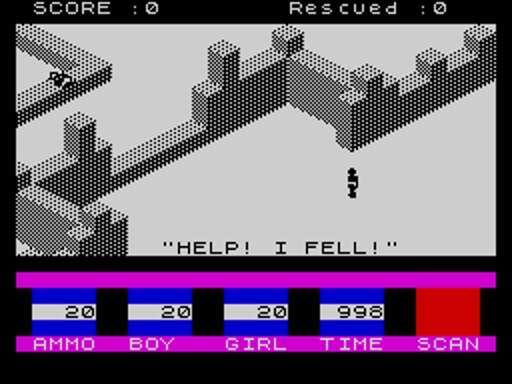
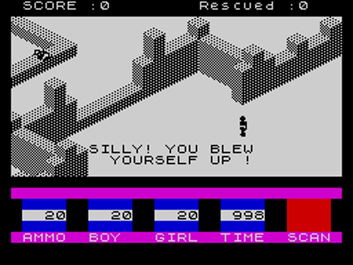
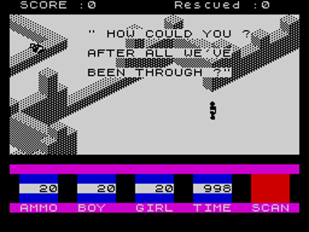
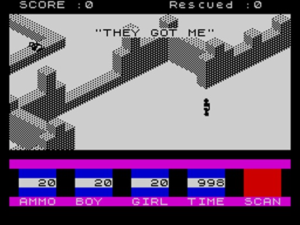
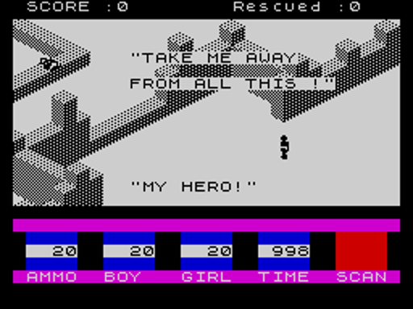
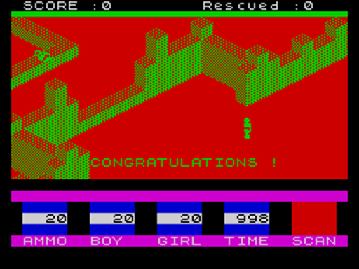
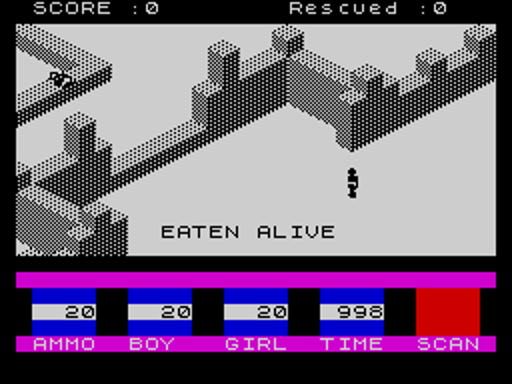
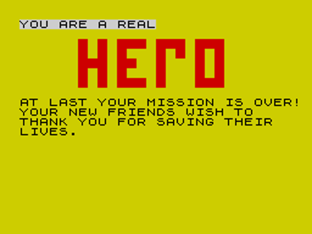

| Ant Attack | The scripts: every message and sound |
| No. | Where | Says | When | Leaves |
|---|---|---|---|---|
| 1 | SCRIPT1 | NASTY FALL ! | The player lands from a fall of five frames or more | |
| 2 | SCRIPT2 | "HELP! I FELL!" | The rescued person does |  |
| 3 | SCRIPT3 | GOOD SHOT! | A grenade blows an ant up | |
| 4 | SCRIPT4 | nothing: a sound | A grenade is thrown: the count is reprinted | |
| 5 | SCRIPT5 | nothing: a sound | A grenade explodes | |
| 6 | SCRIPT6 | SILLY! YOU BLEW / YOURSELF UP ! | The player is caught in their own blast |  |
| 7 | SCRIPT7 | BITTEN! | An ant bites the player | |
| 8 | SCRIPT8 | nothing: a sound | The player's energy changes: reprinted | |
| 9 | SCRIPT9 | " HOW COULD YOU ? / AFTER ALL WE'VE / BEEN THROUGH ?" | The rescued person is caught in the blast |  |
| 10 | SCRIPT10 | "THEY GOT ME" | An ant bites the rescued person |  |
| 11 | SCRIPT11 | nothing: a sound | Their energy changes: reprinted | |
| 12 | SCRIPT12 | "MY HERO!" / "TAKE ME AWAY / FROM ALL THIS !" | The player finds them |  |
| 13 | SCRIPT13 | CONGRATULATIONS ! | Both are out of the city |  |
| 14 | SCRIPT14 | EATEN ALIVE | An ant bites the player's last point of energy away |  |
| 15 | SCRIPT15 | IVE BEEN EATEN ALIVE | The same, for the rescued person | |
| 16 | SCRIPT16 | PARALYSED AN ANT ! | The player lands on an ant | |
| 17 | SCRIPT17 | YOU ARE A REAL / AT LAST YOUR MISSION IS OVER! / YOUR NEW FRIENDS WISH TO / THANK YOU FOR SAVING THEIR / LIVES. | The tenth rescue: BASIC line 3600, through USR 36594 |  |